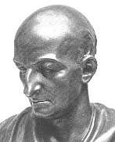

Philosophy Pages
| Dictionary | Study Guide | Logic | F A Q s | ||
|---|---|---|---|---|---|---|
| History | Timeline | Philosophers | Locke | |||
| Philosophy Pages
| Dictionary | Study Guide | Logic | F A Q s | ||
|---|---|---|---|---|---|---|
| History | Timeline | Philosophers | Locke | |||
|
Life and Works . . Logic & Truth . . Individual Substances . . Sufficient Reason . . Space & Time . . Best of All Possible . . Freedom Bibliography Internet Sources |
After completing his philosophical and legal education at Leipzig and Altdorf, Gottfried Leibniz spent several years as a diplomat in France, England, and Holland, where he became acquainted with the leading intellectuals of the age. He then settled in Hanover, where he devoted most of his adult life to the development of a comprehensive scheme for human knowledge, comprising logic, mathematics, philosophy, theology, history, and jurisprudence. Although his own rationalism was founded upon an advanced understanding of logic, which Leibniz largely kept to himself, he did publish many less technical expositions of his results for the general public. These include a survey of the entire scheme in The New System of Nature (1695), a critical examination of Locke's philosophy in  Nouveaux Essaies sur l'entendement humain (New Essays on Human Understanding) (1704), and an attempt to resolve several theological issues in the Théodicée (Theodicy) (1710).
La Monadologie
(Monadology) (1714) is a highly condensed outline of Leibniz's metaphsics.
Complete individual substances, or
monads, are dimensionless points which contain all of their properties—past, present, and future—and, indeed, the entire world.
The true propositions that express their natures follow inexorably from
the principles of contradiction and sufficient reason.

The same themes are presented more popularly in the Discours de Metaphysique (Discourse on Metaphysics) (1686). There Leibniz emphasized the role of a benevolent deity in creating this, the best of all possible worlds, where everything exists in a perfect, pre-established harmony with everything else. Since space and time are merely relations, all of science is a study of phenomenal objects. According to Leibniz, human knowledge involves the discovery within our own minds of all that is a part of our world, and although we cannot make it otherwise, we ought to be grateful for our own inclusion in it.
|
Recommended Reading:
Primary sources:
Secondary sources:
Additional on-line information about Leibniz includes:
|